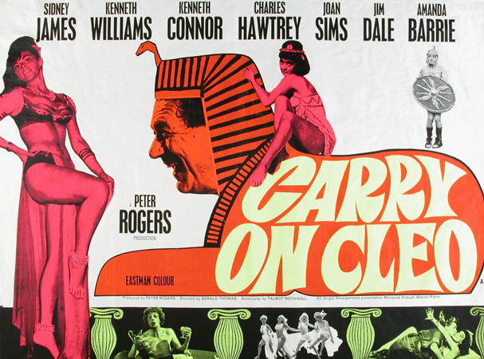
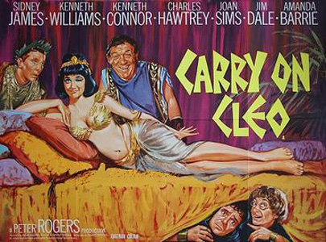
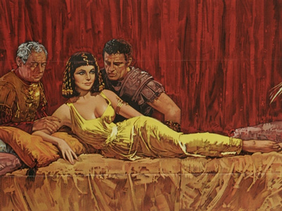

Peter Rogers
Talbot Rothwell
Vicki Smith (uncredited)
The film opens during Caesar's invasions of Britain, with Mark Antony (Sid James) struggling to lead his armies through miserable weather. At a nearby village, cavemen Horsa (Jim Dale) and Hengist Pod (Kenneth Connor) attempt to alert Boudica of the invasion, but are captured by the Romans.
Once in Rome, Horsa is sold by the slave-trading firm Marcus et Spencius, and Hengist is destined to be thrown to the lions when no-one agree to buy him. Horsa and Hengist escape and take refuge in the Temple of Vesta. Whilst hiding there, Julius Caesar (Kenneth Williams) arrives to consult the Vestal Virgins, but an attempt is made on his life by his bodyguard, Bilius (David Davenport). In the melee, Horsa kills Bilius and escapes, leaving Hengist to take the credit for saving Caesar's life and to be made Caesar's new bodyguard.
When a power struggle emerges in Egypt, Mark Antony is sent to force Cleopatra (Amanda Barrie) to abdicate in favour of Ptolemy. However, Mark Antony becomes besotted with her, and instead kills Ptolemy off-screen to win her favour. Cleopatra convinces Mark Antony to kill Caesar and become ruler of Rome himself so that they may rule a powerful Roman-Egyptian alliance together. After seducing one another, Mark Antony agrees, and plots to kill Caesar.
Caesar and Hengist travel to Egypt on a galley, along with Agrippa (Francis de Wolff), whom Mark Antony has convinced to kill Caesar. However, Horsa has been re-captured and is now a slave on Caesar's galley. After killing the galley-master (Peter Gilmore), Horsa and the galley slaves kill Agrippa and his fellow assassins and swim to Egypt. Hengist, who had been sent out to fight Agrippa and was unaware of Horsa's presence on board, again takes the credit.
Once at Cleopatra's palace, an Egyptian soothsayer (Jon Pertwee) warns Caesar of the plot to kill him, but Mark Anthony convinces Caesar not to flee. Instead, Caesar convinces Hengist to change places with him, since Cleopatra and Caesar have never met. On meeting, Cleopatra lures Hengist, who accidentally exposes both Cleopatra and Mark Anthony as would-be assassins. He and Caesar then ally with Horsa, and after defeating Cleopatra's bodyguard Sosages (Tom Clegg) in combat, Hengist and the party flee Egypt. Caesar is returned to Rome, only to be assassinated on the Ides of March. Horsa and Hengist return to Britain, and Mark Antony is left in Egypt to live "one long Saturday night" with Cleopatra.
Filming dates: 13 July - 28 August 1964.
Interiors: Pinewood Studios, Buckinghamshire.
Exteriors: Chobham Common, Surrey.
The costumes and sets used in the film were originally intended for Cleopatra (1963) before that production moved to Rome and rebuilt new sets there.
The film premiered at London's Warner cinema on 10 December 1964 and went on to become one of the 12 most popular movies at the British box office in 1965.
In 2007, the pun "Infamy, infamy, they've all got it in for me", spoken by Kenneth Williams, was voted the funniest one-line joke in film history.
Monthly Film Bulletin - "Most of the players have their moments, although these are perhaps too few for some old stalwarts like Joan Sims. Amanda Barrie, however, as a comically suburban Cleo makes a worthy addition to the team."

